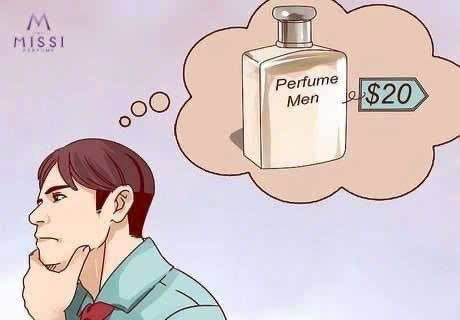
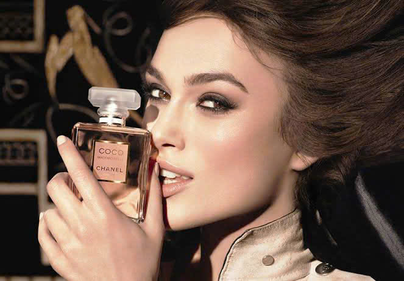
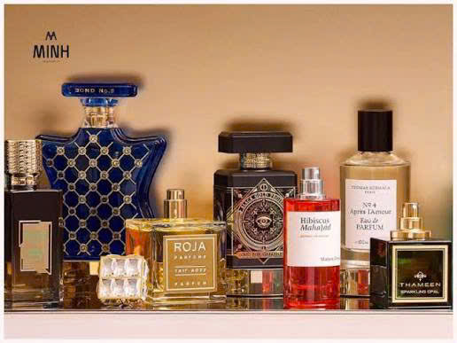
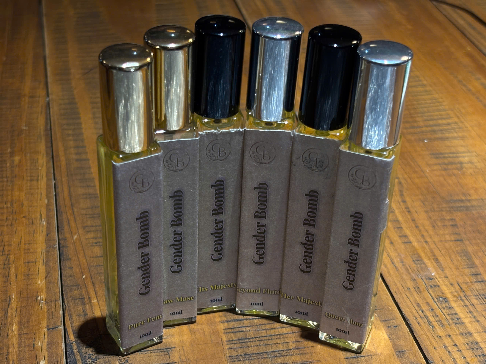

Một chai nước hoa đắt chưa chắc đã là lựa chọn phù hợp.
Nhiều người cho rằng chỉ cần đầu tư vào một chai nước hoa đắt tiền là sẽ có được mùi hương hoàn hảo. Tuy nhiên, thực tế không phải lúc nào giá thành cao cũng đồng nghĩa với việc phù hợp với bản thân.
Một chai nước hoa có thể được đánh giá cao về chất lượng, nhưng nếu không hợp với phong cách, môi trường sử dụng hoặc chemistry của làn da thì trải nghiệm mang lại sẽ không như mong đợi.
Lựa chọn đúng ngay từ đầu sẽ giúp bạn tiết kiệm chi phí và tránh lãng phí vào những sản phẩm không thực sự phù hợp.
Vì sao nhiều người vẫn "mất tiền oan" khi mua nước hoa?
Chọn theo thương hiệu thay vì sở thích
Không ít người quyết định mua nước hoa chỉ vì đó là thương hiệu nổi tiếng hoặc đang được nhiều người yêu thích.
Tuy nhiên, một mùi hương được đánh giá cao chưa chắc sẽ phù hợp với cá tính và nhu cầu sử dụng của bạn.

Mùi hương phù hợp quan trọng hơn giá tiền hoặc độ nổi tiếng.
Mua theo xu hướng
Những mùi hương đang thịnh hành trên mạng xã hội chưa chắc sẽ phù hợp với khí hậu, phong cách hoặc môi trường sử dụng của bạn.
Không thử trực tiếp trước khi mua
Mùi hương trên giấy thử và trên làn da có thể hoàn toàn khác nhau. Việc trải nghiệm thực tế trước khi quyết định mua là rất quan trọng.
Chọn sai nồng độ nước hoa
Eau de Toilette (EDT), Eau de Parfum (EDP) và Parfum đều có khả năng lưu hương khác nhau. Lựa chọn đúng nồng độ sẽ mang lại trải nghiệm tốt hơn.
Những tiêu chí giúp chọn nước hoa đúng ngay từ đầu
Xác định phong cách cá nhân
- Phong cách năng động: cam chanh, trà xanh, hương biển.
- Phong cách lịch lãm: gỗ, da thuộc, gia vị.
- Phong cách nhẹ nhàng: hoa trắng, xạ hương, trái cây.

Mỗi phong cách sẽ phù hợp với những nhóm hương khác nhau.
Chọn theo hoàn cảnh sử dụng
Đi học, đi làm, gặp gỡ bạn bè hay tham dự sự kiện đều có những nhóm hương phù hợp riêng.
Quan tâm đến khả năng lưu hương
Hãy chú ý đến độ lưu hương, độ tỏa hương và cảm giác khi sử dụng thay vì chỉ nhìn vào giá bán.
Không cần quá đắt, chỉ cần phù hợp
Hiện nay nhiều thương hiệu tập trung phát triển những dòng nước hoa có chất lượng tốt, thiết kế hiện đại và mức giá dễ tiếp cận.
Điều quan trọng nhất vẫn là tìm được mùi hương khiến bạn cảm thấy tự tin và thoải mái mỗi khi sử dụng.

Một chai nước hoa phù hợp đôi khi giá trị hơn một sản phẩm đắt tiền.
GenderBomb – Lựa chọn thông minh để bắt đầu hành trình khám phá hương thơm
Nếu bạn đang tìm kiếm một dòng nước hoa vừa có chất lượng chỉn chu, thiết kế hiện đại và mức giá phù hợp để sử dụng hằng ngày, GenderBomb là một lựa chọn đáng cân nhắc.
Thay vì tập trung vào những định nghĩa truyền thống về giới tính, GenderBomb xây dựng từng mùi hương dựa trên cảm xúc và cá tính.
Bộ sưu tập đa dạng từ tươi mát, thanh lịch đến mạnh mẽ giúp người dùng dễ dàng lựa chọn theo phong cách và nhu cầu sử dụng.

Những lựa chọn phù hợp giúp hành trình khám phá hương thơm trở nên dễ dàng hơn.
Mua nước hoa thông minh là đầu tư vào trải nghiệm
Một chai nước hoa đắt tiền chưa chắc là chai nước hoa phù hợp nhất.
Điều quan trọng không nằm ở giá trị sản phẩm mà ở việc mùi hương đó có đồng hành cùng phong cách, cảm xúc và cuộc sống hằng ngày của bạn hay không.
Khi tìm được mùi hương phù hợp, bạn sẽ nhận ra rằng giá trị của nước hoa không nằm ở mức giá mà ở sự tự tin và dấu ấn cá nhân mà nó mang lại.